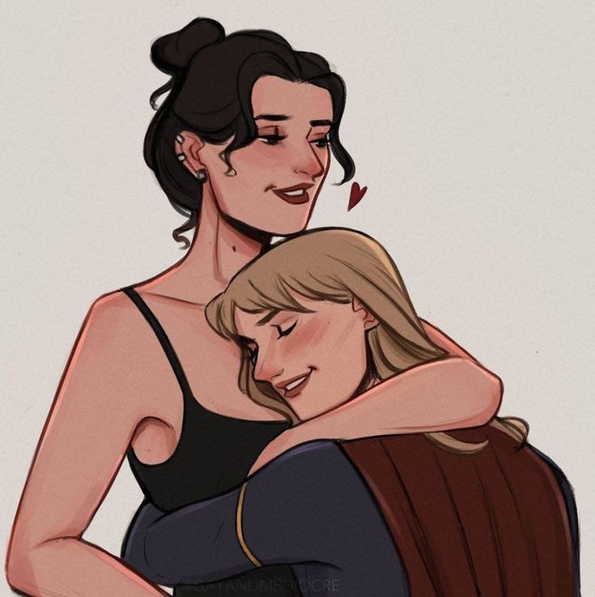

WIKI FANDOM
"Supergirl puede haberme salvado pero kara danvers es mi heroe"
Si no deseas leer todo el contenido puedes ver solo este video
LENA LUTHOR
KARA DANVERS
| principios |
|---|
| amistad | >
Kara – “Uh, bueno, como dije, no soy reportera”
Lena – “Podrías haberme engañado”
- Primeras impresiones
Kara y Lena se encuentran cuando Clark y Kara hacen una visita para investigar una explosión causada por un oscilador de LuthorCorp. Lena discute con Clark sobre la suposición pública sobre ella debido a su apellido y despreocupadamente descarta a Kara y CatCo como periodismo serio. Lena establece su tesis para recuperarse de las malas acciones de su hermano y cambiar el nombre de Luthor para dejar su propia marca en el mundo, que Kara entiende y expresa. Lena les da la información que necesitan sobre el oscilador y salen de su oficina. Cuando Lena luego se va en un helicóptero, es atacada por drones pero cubierta por Superman y Supergirl, y Kara se queda para salvar la vida de Lena. Kara le informa a Lena que alguien está tratando de matarla. A pesar de esto, Lena decide seguir adelante con una ceremonia de cambio de nombre para el LCorp renombrado, donde camina y habla con Kara sobre el desafío que representa. Kara le dice que es arriesgado, pero Lena reitera su necesidad de que LCorp, ahora renombrada, sea vista como algo más que la antigua base de poder de Lex y que ella sea recordada más que por su hermanastro asesino en masa, lo que Kara parece asombrar. Cuando Lena sube al escenario, se producen dos explosiones y la gente entra en pánico. Lena se encuentra con un oficial que resulta ser John Corben y él la retiene a punta de pistola, pero Alex Danvers lo frustra. Supergirl intenta detenerlo, pero él sujeta a Alex y se dispone a irse antes de que Lena le dispare por la espalda. Supergirl se sorprende por la resolución y el nervio de Lena. De vuelta en su empresa, Lena agradece a Clark por su historia y expresa su deseo de que ella y Kara se crucen nuevamente, lo que Kara corresponde. pero Lena reitera su necesidad de que LCorp, ahora renombrada, sea vista como algo más que la antigua base de poder de Lex y que ella
sea recordada por algo más que su hermanastro asesino en masa, por lo que Kara parece asombrada. Cuando Lena sube al escenario, se producen dos explosiones y la gente entra en pánico. Lena se encuentra con un oficial que resulta ser John Corben y él la retiene a punta de pistola, pero Alex Danvers lo frustra. Supergirl intenta detenerlo, pero él sujeta a Alex y se dispone a irse antes de que Lena le dispare por la espalda. Supergirl se sorprende por la resolución y el nervio de Lena. De vuelta en su empresa, Lena agradece a Clark por su historia y expresa su deseo de que ella y Kara se crucen nuevamente, lo que Kara corresponde. pero Lena reitera su necesidad de que LCorp, ahora renombrada, sea vista como algo más que la antigua base de poder de Lex y que ella sea recordada por algo más que su hermanastro asesino en masa, por lo que Kara parece asombrada. Cuando Lena sube al escenario, se producen dos explosiones y la gente entra en pánico. Lena se encuentra con un oficial que resulta ser John Corben y él la retiene a punta de pistola, pero Alex Danvers lo frustra. Supergirl intenta detenerlo, pero él sujeta a Alex y se dispone a irse antes de que Lena le dispare por la espalda. Supergirl se sorprende por la resolución y el nervio de Lena. De vuelta en su empresa, Lena agradece a Clark por su historia y expresa su deseo de que ella y Kara se crucen nuevamente, lo que Kara corresponde. La antigua base de poder de ella y para que ella sea recordada por más que su hermanastro asesino en masa, por lo que Kara parece asombrada. Cuando Lena sube al escenario, se producen dos explosiones y la gente entra en pánico. Lena se encuentra con un oficial que resulta ser John Corben y él la retiene a punta de pistola, pero Alex Danvers lo frustra. Supergirl intenta detenerlo, pero él sujeta a Alex y se dispone a irse antes de que Lena le dispare por la espalda. Supergirl se sorprende por la resolución y el nervio de Lena. De vuelta en su empresa, Lena agradece a Clark por su historia y expresa su deseo de que ella y Kara se crucen nuevamente, lo que Kara corresponde. La antigua base de poder de ella y para que ella sea recordada por más que su hermanastro asesino en masa, por lo que Kara parece asombrada. Cuando Lena sube al escenario, se producen dos explosiones y la gente entra en pánico. Lena se encuentra con un oficial que resulta ser John Corben y él la retiene a punta de pistola, pero Alex Danvers lo frustra. Supergirl intenta detenerlo, pero él sujeta a Alex y se dispone a irse antes de que Lena le dispare por la espalda. Supergirl se sorprende por la resolución y el nervio de Lena. De vuelta en su empresa, Lena agradece a Clark por su historia y expresa su deseo de que ella y Kara se crucen nuevamente, lo que Kara corresponde. Él lo sostiene a punta de pistola, pero Alex Danvers lo frustra. Supergirl intenta detenerlo, pero él sujeta a Alex y se dispone a irse antes de que Lena le dispare por la espalda. Supergirl se sorprende por la resolución y el nervio de Lena. De vuelta en su empresa, Lena agradece a Clark por su historia y expresa su deseo de que ella y Kara se crucen nuevamente, lo que Kara corresponde. Él lo sostiene a punta de pistola, pero Alex Danvers lo frustra. Supergirl intenta detenerlo, pero él sujeta a Alex y se dispone a irse antes de que Lena le dispare por la espalda. Supergirl se sorprende por la resolución y el nervio de Lena. De vuelta en su empresa, Lena agradece a Clark por su historia y expresa su deseo de que ella y Kara se crucen nuevamente, lo que Kara corresponde
Kara –"¿Quién lo hubiera creído? ¿Un Luthor y un Super trabajando juntos? Espero que podamos trabajar juntos más en el futuro
Lena – “Podrías haberme engañado”
- SUPERCORD
Cuando el presidente Marsdin está listo para firmar una Orden Ejecutiva, la Ley de Amnistía Extranjera, Snapper Carr asigna a Kara para hablar con Lena sobre su opinión al respecto. Establecen una base de nombre de pila, y la respuesta de Lena a la consulta de Kara es presentar su último invento: un dispositivo de detección de extraterrestres que se lanzará a raíz de la firma y ratificación de la Ley. Lena le muestra a Kara cómo funciona y le pide a Kara que lo pruebe ella misma, pero Kara rápidamente presenta el contraargumento de su invasión de la privacidad de Alien. Lena cree que los humanos tienen "derecho a saber" si sus amigos son extraterrestres. Mientras Lena mira hacia otro lado, Kara usa rápidamente su visión de calor para manipular el dispositivo y cuando Lena le pide que siga adelante con la prueba, se vuelve verde, lo que indica que Kara no es un extraterrestre, para alivio de Kara. Después de publicar su entrevista con Lena, Kara llega cuando Lena pidió verla y felicita la escritura de Kara. Kara admite que al principio escribió un artículo mordaz sobre el dispositivo de Lena, pero su editor exigió que se reescribiera, lo que hizo que Kara reconsiderara su posición y la de Lena. Lena vuelve a mencionar a su hermano y dice que le enseñó que a veces es necesario protegerse de las malas personas, lo que Kara admite que algunos extraterrestres pueden ser, refiriéndose a Mon-El.
Después de un ataque al nuevo edificio del Hospital Infantil de National City, Lena decide organizar una recaudación de fondos con su empresa para ayudar al hospital e invita a Kara a ser su invitada. Kara está de acuerdo y dice que sería un honor asistir. Más tarde, Lena pasa por el piso de Kara para pedirle ayuda para localizar a Supergirl, de quien Lena necesita un favor. Lena también conoce correctamente a Alex por primera vez, agradeciéndole a Alex por salvarle la vida (aunque fue al revés). Kara está de acuerdo, se viste y luego aparece en LCorp, donde Lena también "conoce" a Supergirl correctamente, por primera vez. Lena le pide a Kara que sea la seguridad en la fiesta y Kara tiene sus dudas sobre el riesgo que implica. Lena está preocupada de que Kara disfrazada pueda estar juzgándola prematuramente por la animosidad de larga data entre Superman y Lex. pero Supergirl le asegura que no. Lena también apela a la comprensión de Supergirl de tomar riesgos para hacer lo correcto y acepta venir en beneficio de Lena, aunque, cuando se va, Kara se preocupa por tener que asistir tanto como Kara como como Supergirl.
En la fiesta, Winn ayuda a Kara creando distracciones para que pueda saludar a Lena como ella misma y como Supergirl. Cuando llega la pandilla armada de Cadmus, luchan contra Supergirl y Winn cae debajo del escenario donde Lena está preparando un dispositivo para eliminar a los matones. Ella tiene éxito y destruye sus armas, lo que lleva a su fácil captura. Más tarde, Kara visita LCorp y habla con Lena sobre su plan, en el que Lena dice que no incluyó a Supergirl porque no creía que Supergirl creyera que Luthor intentaría salvar a la gente. Lena expresa su alegría porque Supergirl parece estar lista para tener una buena relación con ella y Kara agradece a Lena por su ayuda para atrapar a la pandilla. Sin darse cuenta, Kara también conoce brevemente a la madre de Lena antes de irse.
Kara – “No podría haberlos detenido sin ti. Gracia”
Lena – “¿Quién lo hubiera creído? ¿Un Luthor y un Super trabajando juntos? Espero que podamos trabajar juntos más en el futuro”
- SUPERCORD
Después de enterarse de que Lillian Luthor es la cabeza de Cadmus cuando captura a Supergirl [5], Kara entrevista a Lena para un artículo sobre mujeres poderosas y sus madres, donde se da cuenta de que Lena no sabe nada sobre Lillian y Cadmus. Lena le dice a Kara que su madre siempre desaprobaba a Lena. Supergirl lucha contra Cyborg Superman en LCorp, donde Lena escucha el ruido y baja las escaleras. Cyborg Superman arroja el logotipo del lobby de LCorp a Lena y Kara corre frente a Lena para bloquearlo mientras explota fuera de Supergirl. Ella le dice a Lena que salga y Lena se va corriendo. Después de la pelea, Supergirl visita a Lena para pedirle ayuda para encontrar a su madre e inevitablemente le cuenta a Lena la verdad sobre Lillian. Lena está incrédula y Kara le implora que sea su propio héroe a pesar de las malas acciones de su familia, pero Lena le dice a Supergirl que se vaya y ella lo hace. Lena llama a su madre y aparentemente está lista para trabajar con Cadmus. Supergirl y Martian Manhunter aparecen para frustrar el plan de Lillian de matar a todos los alienígenas disparando veneno al aire, y Supergirl le ruega a Lena que no siga adelante, pero Lena dispara el cohete. Mientras creen que van a morir, J'onn se sorprende de que no pase nada y Lillian se da cuenta de que Lena cambió el veneno. Lena afirma y agrega que llamó a la policía, quienes arrestaron a Lillian Luthor
Después del arresto, Lena tiene que testificar contra su madre en la corte. Kara ve la televisión en Al's Dive Bar y se siente muy mal por lo que Lena tiene que pasar. Decide visitar a Lena para hablar con ella y ver cómo le va. Kara trae donas y hablan. Lena siente que su testimonio la separó públicamente de las malas connotaciones del nombre Luthor, pero Lillian quiere verla y Lena no quiere ir. Kara ofrece que hablar con Lillian podría tranquilizarla y Lena no está segura, pero decide irse. En la prisión, se entera de que Lionel Luthor en realidad era su verdadero padre y que Lena es producto de una aventura que Lionel tuvo con su madre. Lillian le pide a Lena una segunda oportunidad de ser la madre de Lena y Lena acepta. En la corte, Metallo está en el estrado y libera a Lillian. Las autoridades sospechan que Lena le devolvió la kryptonita a Metallo, ya que ella era la única visitante en la prisión y, después de luchar contra ellos, Kara decide contárselo a Lena. Lena inmediatamente siente que Kara es más una periodista que una amiga, cuando le pregunta a Kara si Kara realmente cree que Lena lo hizo y Kara duda. Ella se disculpa con Lena, pero la policía entra y le pide a Kara que se vaya. Kara se niega y Lena dice que quiere que Kara se quede. Maggie les muestra un video de Lena sacando Kryptonita de una caja fuerte y la arresta, a pesar de las protestas de Kara de que escuchen a Lena. Ella se disculpa con Lena, pero la policía entra y le pide a Kara que se vaya. Kara se niega y Lena dice que quiere que Kara se quede. Maggie les muestra un video de Lena sacando Kryptonita de una caja fuerte y la arresta, a pesar de las protestas de Kara de que escuchen a Lena. Ella se disculpa con Lena, pero la policía entra y le pide a Kara que se vaya. Kara se niega y Lena dice que quiere que Kara se quede. Maggie les muestra un video de Lena sacando Kryptonita de una caja fuerte y la arresta, a pesar de las protestas de Kara de que escuchen a Lena.
En prisión, los guardias se burlan de Lena y se sorprende cuando Metallo viene a sacarla. Mientras tanto, Kara defiende a Lena ante todos sus amigos y familiares, incluido un James cada vez más frustrado que cree que Lena podría poner en peligro a Kara, como Lex hizo con Clark. Kara sale y se desahoga perforando concreto en las instalaciones de entrenamiento de DEO. En la furgoneta de escape, Lillian intenta convencer a Lena para que se quede con ella, prometiéndole ser una buena madre y que a nadie más le importe Lena. La llevan a uno de los almacenes de Lex y revelan que Lillian necesita la firma biológica de Lena para acceder a su bóveda antikryptoniana. Lena está herida, pero no se sorprende al descubrir que Lillian la estaba usando, y Cyborg Superman obliga a Lena a acceder a la bóveda. Supergirl llega para salvarlos de la inminente explosión del corazón de Kryptonita de Metallo. Lillian usa una de las armas de Lex en Kara mientras Lena les grita que no lastimen a Supergirl y queda inconsciente. J'onn llega para ayudar y Kara destruye el arma, tratando en vano de razonar con Metallo. Kara corre hacia Lena y sale volando con Lena en sus brazos, escapando por poco. Más tarde, Kara visita a Lena, quien está agradecida por el artículo sobre ella y Kara le agradece disimuladamente a Lena por llenar el área de su escritorio con flores. Lena agradece a Kara por creer en ella cuando nadie más lo haría y Kara sostiene que siempre estará ahí para Lena. Está agradecida por el artículo sobre ella y Kara le agradece disimuladamente a Lena por llenar el área de su escritorio con flores. Lena agradece a Kara por creer en ella cuando nadie más lo haría y Kara sostiene que siempre estará ahí para Lena. Está agradecida por el artículo sobre ella y Kara le agradece disimuladamente a Lena por llenar el área de su escritorio con flores. Lena agradece a Kara por creer en ella cuando nadie más lo haría y Kara sostiene que siempre estará ahí para Lena
lena– “Nunca he tenido amigos como tú antes. Ahora que lo pienso, nunca he tenido una familia como tú. Nadie me ha defendido así”
kara – “Bueno, ahora tienes a alguien que te defenderá. Siempre”
- Amor
Cadmus vuelve a asomar su fea cabeza y secuestra a las personas que figuran en el Registro de extraterrestres robado, lo que hace que Kara se olvide de los planes para almorzar con Lena. Kara le cuenta a Lena disgustada sobre las actividades de su madre criminal separada. Lena se ofrece a ayudar a descubrir dónde Cadmus tiene a las personas como rehenes, al mismo tiempo que anima a Kara a publicar su historia en línea, a pesar del rechazo de Snapper. Lena descubre que un sitio de LCorp que se cerró en 2007 todavía recibe facturas por envíos. Lena se da cuenta de que es donde Lillian tiene rehenes y llama a Kara para informarle, pero dos hombres que trabajan para Cadmus la atacan y tratan de silenciarla. Lena dispara a uno de ellos, pero deja caer su teléfono y la siguen hasta su balcón mientras Kara escucha sus gritos. Los hombres sostienen a Lena sobre el balcón, pero accidentalmente se cae para su sorpresa. De repente, Supergirl aparece cargando a Lena en sus brazos y los derrota con aliento de hielo. Lena le agradece y le dice